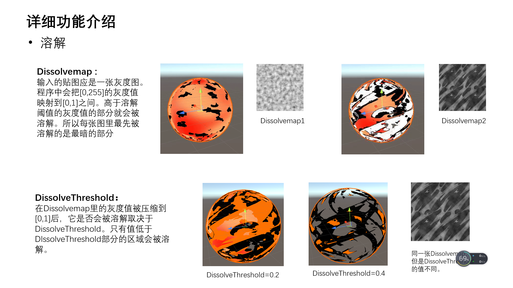
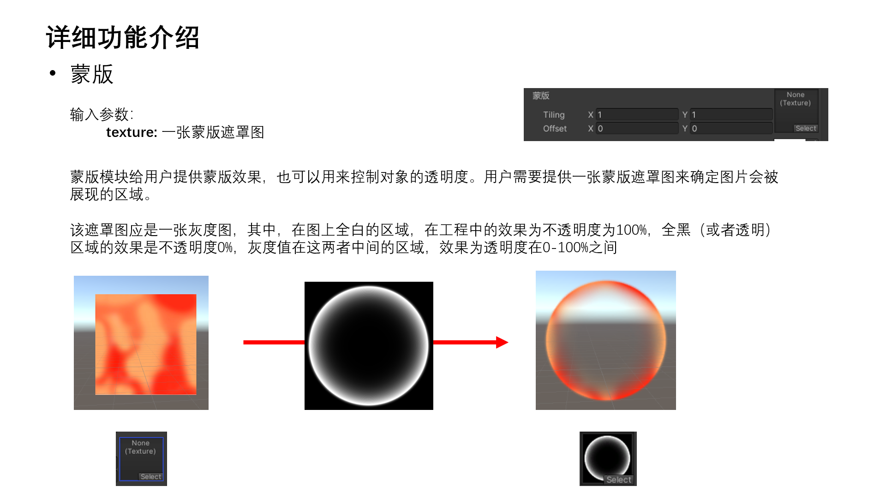

事情起因是前一天写了一个包含溶解、蒙版功能的shader。


在shader中我判断此部分应有的透明度时使用了if判断语句，根据map中的灰度值判断此处的透明度。
1 | if (dissolveValue.r < threshold ) |
后来被前辈看到代码后就提醒我尽量不要在着色器中使用实时的条件判断语句，因为这样会导致GPU并行计算的优点无法被使用。
关于着色器中if语句的替代方法，可以参考这篇文章。
修改后的代码如下：
1 | col.a=col.a * ( 1 - max(sign(threshold - dissolveValue.r), 0.0)); |